Python Interface¶
The Python interface extends the Python CVXOPT package with functions from the CHOMPACK library. It is based on the CVXOPT dense and sparse matrix types, and two new Python objects: a chordal matrix object for storing symmetric chordal matrices, and a chordal factor object for storing Cholesky factors of positive definite chordal matrices. These two data types can be created and manipulated, and converted to CVXOPT matrices. using the functions described below. They can be thought of as opaque objects that contain the values of the matrix, plus the sparsity pattern and a perfect elimination ordering for the sparsity pattern.
When the following documentation states a requirement that two chordal matrix objects and/orfactors have the same sparsity pattern, we mean by this that they were created from the same chordal matrix object via a series of calls to functions that create a new chordal matrix or factor from an existing one (such as cholesky, completion, copy, llt, partial_inv, or project). Chordal matrices that were created from CVXOPT matrices via the function embed are not recognized to have the same sparsity pattern, even though their sparsity patterns may be equal (mathematically).
CVXOPT integer matrices are used to represent permutation matrices. The
relation between the CVXOPT integer matrix p (a permutation of the
column matrix with entries 0, 1, ..., n-1) and the permutation matrix
 it represents is as follows: if the CVXOPT matrix X has
value
it represents is as follows: if the CVXOPT matrix X has
value  , then the CVXOPT matrix X[p, p] has value 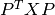.
, then the CVXOPT matrix X[p, p] has value 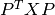.
Functions¶
The functions in the package can be divided in different groups.
- Conversion from CVXOPT matrices to chordal matrix objects and vice-versa.
- embed: finds a chordal embedding of the sparsity pattern of a non-chordal symmetric sparse CVXOPT matrix, projects the matrix on the embedding, and returns the result as a chordal matrix.
- project: projects a non-chordal symmetric sparse CVXOPT matrix on a given chordal sparsity pattern, and returns the result as a chordal matrix.
- sparse: converts a chordal matrix or factor to a CVXOPT sparse matrix.
- Main computational routines.
- cholesky: Cholesky factorization of a positive definite symmetric chordal matrix.
- solve: multiplication with a Cholesky factor or its inverse.
- completion: maximum determinant positive definite completion of of a symmetric chordal matrix.
- partial_inv: projection of the inverse of a positive definite chordal matrix on its sparsity pattern.
- hessian: evaluates the hessian or inverse hessian of the logarithmic barrier function for the positive definite matrices with a given chordal sparsity pattern.
- Auxiliary routines for chordal matrices.
- copy: makes a copy of a chordal matrix.
- scal: scales a chordal matrix by a scalar.
- axpy adds a multiple of a chordal matrix to a chordal matrix with the same sparsity pattern.
- dot: inner product of two chordal matrices with the same sparsity pattern.
- syr2: computes projected rank 2 update of a chordal matrix.
- llt: computes a chordal matrix from its Cholesky factor.
- logdet: returns log(det(L)) for a Cholesky factor L.
- info: returns a dictionary with information about a chordal sparsity pattern.
- Auxiliary routines for CVXOPT sparse matrices.
- symmetrize: computes X + X’ - diag(diag(X)) for a lower triangular sparse CVXOPT matrix X.
- perm: an efficient method for computing a symmetric reordering X[p, p] of a CVXOPT sparse matrix X.
- tril: returns the lower triangular part of a square CVXOPT sparse matrix.
- peo: checks whether a given permutation is a perfect elimination ordering for a CVXOPT sparse matrix.
- maxcardsearch: returns the maximum cardinality search reordering of a chordal sparse CVXOPT matrix.
- maxchord: computes a maximal chordal subgraph from a sparse CVXOPT matrix and returns chordal matrix.
Conversion to/from CVXOPT¶
- embed(X[, p = None])¶
Computes a chordal embedding of a sparse matrix.
Y, nfill = embed(X, p = None)
Returns a chordal embedding of the sparsity pattern of X, projects X on the embedding, and returns the result as a chordal matrix object. The argument p is a permutation with as default value the natural ordering matrix([0, 1, ..., n-1]). The embedding is computed via a symbolic Cholesky factorization of X[p, p].
Parameters: - X – CVXOPT sparse square matrix of doubles. Only the lower triangular part of the matrix is accessed
- p – CVXOPT dense integer matrix of length n, if n is the order of X
Returns: tuple (Y, nfill) with Y a chordal matrix embedding and nfill the number of nonzero entries added in the embedding
- project(X, Y)¶
Projects a CVXOPT sparse matrix on a chordal sparsity pattern.
C = project(X, Y)
Projects the CVXOPT sparse matrix Y on the sparsity pattern of the chordal matrix X, and returns the result as a chordal matrix. Only the lower triangular part of X is referenced.
Parameters: - X – chordal matrix
- Y – square CVXOPT sparse matrix of doubles
Returns: chordal matrix with the same sparsity pattern as X
- sparse(X)¶
Converts a chordal matrix or factor to a CVXOPT sparse matrix.
L = sparse(X)
If X is a chordal matrix, the function returns the lower triangular part of X[p, p] as a CVXOPT sparse matrix. If X is a chordal factor for a Cholesky factorization (1) the function returns the lower triangular sparse matrix L.
Parameters: X – chordal matrix or factor Returns: lower triangular CVXOPT sparse square matrix of doubles
Computational routines¶
- cholesky(X)¶
Cholesky factorization.
L = cholesky(X)
Computes a zero fill-in Cholesky factorization
(1)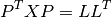
of a positive definite chordal matrix X.
Parameters: X – chordal matrix Returns: chordal factor if the factorization was successful Raises : an ArithmethicError if the matrix is not positive definite
- solve(L, X[, mode = 0])¶
Solves a factored set of equations, or multiplies with Cholesky factors
solve(L, X, mode = 0)
L contains the factors of a factorization (1) of a positive definite sparse chordal matrix. X is a CVXOPT dense matrix of doubles with the same number of rows as L. On exit, X is overwritten with one of the four matrices in the table.
action mode 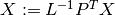 0 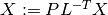 1 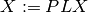 2 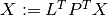 3 Parameters: - L – chordal factor
- X – CVXOPT dense matrix of doubles with n rows if n is the order of L
- mode – integer
- completion(X)¶
Maximum-determinant positive definite completion.
L = completion(X)
Returns the Cholesky factor of the inverse of the maximum-determinant positive definite completion of a symmetric chordal matrix X, ie, the Cholesky factor of the inverse of the solution of
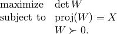
The inverse 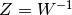 has the same sparsity pattern as
and satisfies the nonlinear equation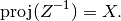
completion returns the factor in the factorization 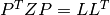.
Parameters: X – chordal matrix Returns: chordal factor with the same sparsity pattern as X Raises : an ArithmethicError if the matrix does not have a positive definite completion
- partial_inv(L)¶
Evaluates the projection of the inverse of the matrix 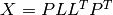 on the sparsity pattern of
.Y = partial_inv(L)
Computes
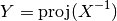
where
is a positive definite chordal matrix specified by
its Cholesky factor 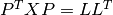.Parameters: L – chordal factor Returns: chordal matrix with the same sparsity pattern as L
- hessian(L, Y, U[, adj = False[, inv = False]])¶
The mapping
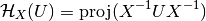
is the Hessian of the log-det barrier at a positive definite chordal matrix
, applied to a symmetric chordal matrix  .
The Hessian operator can be factored as
.
The Hessian operator can be factored as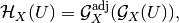
where the mappings on the right hand side are adjoint mappings that map chordal symmetric matrices to chordal symmetric matrices.
hessian(L, Y, U, adj = False, inv = False)
evaluates these mappings or their inverses for a list of symmetric chordal matrices U = [ U[0], ..., U[N-1] ], and overwrites the matrices with the results. The following table lists the possible actions.
Action adj inv 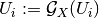 False False 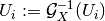 False True 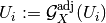 True False 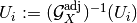 True True The input argument L is the Cholesky factor of
,
as computed by the command L = cholesky(X).
The input argument Y is the partial inverse of the inverse of
, as computed by the command Y = partial_inv(L).
The input argument U is a list of chordal matrices with the
same sparsity pattern as L and Y.The matrices 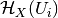 can be computed by two calls
hessian(L, Y, U, adj = False, inv = False) hessian(L, Y, U, adj = True, inv = False)
The matrices 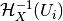 can be computed as
hessian(L, Y, U, adj = True, inv = True) hessian(L, Y, U, adj = False, inv = True)
Parameters: - L – chordal factor
- Y – chordal matrix with the same sparsity pattern as L.
- U – list of chordal matrices with the same sparsity pattern as L and Y
- adj – True/False
- inv – True/False
Auxiliary routines for chordal matrices¶
- copy(X)¶
Returns a copy of a chordal matrix.
Parameters: X – chordal matrix Returns: chordal matrix with the same sparsity pattern and numerical values as X
- scal(alpha, X)¶
Evaluates
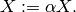
Parameters: - alpha – scaling factor
- X – chordal matrix
- axpy(X, Y, alpha)¶
Evaluates
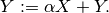
Parameters: - X – chordal matrix
- Y – chordal matrix with the same sparsity pattern as X
- alpha – float
- dot(X, Y)¶
Inner product of symmetric chordal sparse matrices.
Returns the inner product
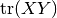
of two symmetric sparse matrices with the same chordal sparsity pattern.
Parameters: - X – chordal matrix
- Y – chordal matrix with have the same sparsity pattern as X
Return type: float
- syr2(X, y, z, alpha=1.0, beta=1.0)¶
Computes projected rank 2 update of a chordal matrix
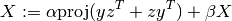
where
is of order n, and  and
and  are n-vectors.
are n-vectors.Parameters: - X – chordal matrix
- y – CVXOPT dense matrix of doubles of length n
- z – CVXOPT dense matrix of doubles of length n
- alpha – float
- beta – float
Return type: float
- llt(L)¶
Computes a symmetric matrix from its Cholesky factorization
X = llt(L)
Computes X from its Cholesky factorization .
Parameters: L – chordal factor Returns: chordal matrix with the same sparsity pattern as L
- logdet(L)¶
Returns the logarithm of the determinant of a Cholesky factor L.
Parameters: L – chordal factor Returns: float
- info(X)¶
Returns a dictionary with information about a chordal sparsity pattern.
Parameters: X – chordal matrix or factor Returns: python dictionary representation of the sparsity pattern
Auxiliary routines for CVXOPT matrices¶
- maxcardsearch(X)¶
Maximum cardinality search ordering of a sparse chordal matrix.
Returns the maximum cardinality search ordering of a symmetric chordal matrix X. The maximum cardinality search ordering is a perfect elimination ordering for the Cholesky factorization.
Parameters: X – CVXOPT sparse square matrix of doubles. Only the sparsity pattern of the lower triangular part of the matrix is accessed Returns: CVXOPT dense integer matrix of length n, if n is the order of X
- peo(X, p)¶
Checks whether an ordering is a perfect elmimination order.
Returns True if the permutation p is a perfect elimination order for a Cholesky factorization of X.
Parameters: - X – CVXOPT sparse square matrix of doubles. Only the sparsity pattern of the lower triangular part is accessed
- p – CVXOPT dense integer matrix of length n, if n is the order of X
- perm(X, p)¶
Performs a symmetric permutation of a square sparse matrix.
Y = perm(X, p)
This is equivalent to but more efficient than Y = X[p, p].
Parameters: - X – CVXOPT sparse square matrix of doubles
- p – CVXOPT dense integer matrix of length n, if n is the order of X
Returns: CVXOPT sparse square matrix of doubles
- symmetrize(X)¶
Symmetrizes a lower triangular matrix. Returns
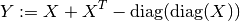
where
is a lower triangular matrix.Parameters: X – CVXOPT sparse square matrix of doubles. Must be lower triangular Returns: CVXOPT sparse square matrix of doubles
- tril(X)¶
Returns the lower triangular part of a sparse matrix X.
Parameters: X – CVXOPT sparse square matrix of doubles Returns: CVXOPT sparse square matrix of doubles
- maxchord(X, k)¶
Computes maximal chordal subgraph of sparsity graph and returns the projection of X on the chordal subgraph as a chordal matrix. The optional parameter k determines the last vertex in a perfect elimination ordering of the maximal chordal subgraph. A node of maximum degree is chosen if k is not specified.
param X: CVXOPT sparse square matrix of doubles. Only the sparsity pattern of the lower triangular part of the matrix is accessed. param k: integer between 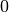 and 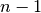 if  is the order of X
is the order of Xreturns: chordal matrix